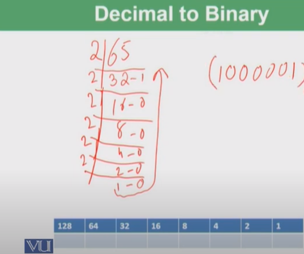
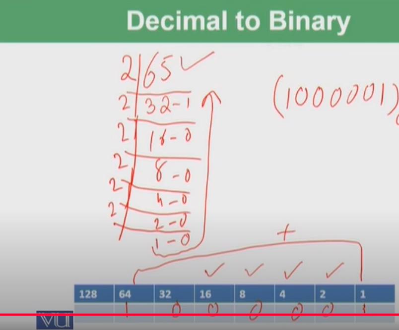

Bit is made from 2 words, Binary and digit. B is taken from Binary and "it" is taken from digit. دوہرا · ثنائی · مثنیٰ · مزدوج · جوڑے دار · کسی شے یا نظام میں ہر دو میں سے ایک منتخب کر سکنے کی صلاحیت رکھنے والا · بائینری.
Whole Number : Any positive number that does not include a fractional or decimal part. This means that, for example, the numbers 0, 1, 2, 3, 4, 5, 6, and 7 are all whole numbers.
The word decimal comes from the Latin word 'decimus' that means "tenth part"
(1 out of 10 parts) 1/10 is fraction and 0.1 is decimal.
0.1
0 is whole number;
. is decimal point;
1 is fractional part
Key Fact A decimal number is a fraction with a denominator of 10, 100 and 1000.
3/10 = 0.3 and 7/10 = 0.7
If we eat one part out of 100, so we will write 1/100 in fraction and 0.01 in decimal. 77/100 = 0.77
1/1000 = 0.001
Base 10 decimals refer to the standard number system used in everyday life, also known as the decimal system. It is called base 10 because it is based on ten digits: 0, 1, 2, 3, 4, 5, 6, 7, 8, and 9. Each digit in this numbers represents a different power of 10, depending on its position.
For example, in the number 345.67:
Together 300 + 40 + 5 + 0.6 + 0.07 = 345.67
The system is widely used because it matches the way humans typically count using ten fingers
For any number: a-n
an = 1/an (a-n = 1/an)
So for 10-2=1/10 * 10 ; = 1/100 ; = 0.01 :
10-3 = 1/10*10*10 = 0.001
You can calculate this in JavaScript using the Math.pow() function or the Exponentiation (Ex-poh-nen-shee-ay-shun) operator **:
The exponentiation operator (**) in JavaScript is used to raise a number to the power of another number. It is equivalent to using Math.pow().
A negative exponent means reciprocal, so:
10-2 = 1/ 10-2 = 1/100 = 0.01
Here's how place values work on both sides of the decimal point
Left of the Decimal (Whole Numbers) : The place value starts from ones (10⁰) and increases by powers of 10 as you move left.
1 → Ones (10⁰ = 1)
10 → Tens (10¹ = 10)
100 → Hundreds (10² = 100)
1000 → Thousands (10³ = 1000)
Right of the Decimal (Decimal Fractions) :The place value starts from tenths (10⁻¹) and decreases by powers of 10 as you move right.
0.1 → Tenths (10⁻¹ = 1/10 = 0.1)
0.01 → Hundredths (10⁻² = 1/100 = 0.01)
0.001 → Thousandths (10⁻³ = 1/1000 = 0.001)
For the number 123.456, the place values are:
Digit Place Value
1 Hundreds (10² = 100)
2 Tens (10¹ = 10)
3 Ones (10⁰ = 1)
4 Tenths (10⁻¹ = 0.1)
5 Hundredths (10⁻² = 0.01)
6 Thousandths (10⁻³ = 0.001)
Bitwise refers to operations or manipulations of data at the level of individual bits, which are the smallest units of data in computing, either 0 or 1. 0 for off and 1 for on. Bitwise operations are fundamental in low-level programming and are used to manipulate bits directly, usually for performance optimization, encryption, and other specialized tasks. In JavaScript (and many other languages), there are several bitwise operators that allow you to work with the bits of binary numbers.
00 01 10 11
In general computing, the terms bit and byte represent different units of data.
00000000 (0 in decimal)
00000001 (1 in decimal)
00000010 (2 in decimal)
00000011 (3 in decimal)
The number 11111111 is an 8-bit binary number, meaning it has 8 digits, each representing a power of 2.
Binary to Decimal Conversion: Each bit in an 8-bit binary number represents a power of 2, starting from 20 on the right:
Binary Power of 2 Value
1 27 128
1 26 64
1 25 32
1 24 16
1 23 8
1 22 4
1 21 2
1 20 1
128+64+32+16+8+4+2+1=255
So, 11111111 in binary is 255 in decimal.
The statement 1 bit = 2 characters, 2 bits = 4 characters, 3 bits = 8 characters refers to the number of unique combinations or patterns that can be represented with a certain number of bits.
This follows the formula:
Number of combinations = 2 number of bits
Let's break it down:
The number of unique characters or values that can be represented by a set number of bits increases exponentially as you add more bits. Each additional bit doubles the number of possible combinations:
2 1 = 2 , 2 2= 4 , 2 3 = 8, 2 4 = 16 ..... And so on
Let us see step-by-step how to convert 65 into binary:
Step 3 : Read the remainders in reverse order:
Starting from the last remainder to the first, we get 1000001, or in 8-bit format, 01000001.
Thus, the binary form of 65 is 1000001.
Pic Of Decimal To Binary is below
Another Pic
In binary division, the result of 1 ÷ 2 = 0 remainder 1 is based on how division works in base-2 (binary) rather than base-10 (decimal). Let us break it down.
In binary, 1 represents a single unit, and 2 in binary is represented as 10 (the base-2 number for the decimal number 2).
We want to divide 1 by 2:
Thus, when you divide 1 by 2 in binary:
This is expressed as:
1÷2=0 remainder 1
In binary, the quotient 0 means that the division does not produce a whole number, but the remainder 1 shows that 1 unit is left over after the division attempt.
In decimal, when you divide 1 by 2, the result is 0.5, which means 0 full twos fit into 1, and you have half (0.5) left over.
In binary, since we do not have fractional numbers in standard binary division, we only express the remainder (in this case, 1) instead of a decimal fraction.
"32-bit bitwise" refers to operations that manipulate the individual bits of 32-bit binary numbers. Here's a breakdown of what this means:
Bitwise operations work directly on the binary representation of numbers. Common bitwise operators include:
1: AND (&): Compares each bit of two numbers; results in 1 if both bits are 1, otherwise 0.
Example: 5 & 3 results in 1 (binary 0001).
2: OR (|): Results in 1 if at least one of the bits is 1.
Example: 5 | 3 results in 7 (binary 0111).
3: XOR (^): Results in 1 if the bits are different.
Example: 5 ^ 3 results in 6 (binary 0110).
4: NOT (~): Inverts the bits.
Example: ~5 results in -6 (in binary, all bits flipped).
5: Left Shift ( < < ): Shifts bits to the left, filling in with zeros. Each shift to the left
effectively multiplies the number by 2.
Example: 5 < < 1 results in 10 (binary 1010).
6: Right Shift (>>): Shifts bits to the right. For signed numbers, it preserves the sign bit (the
leftmost bit).
Example: 5 >> 1 results in 2 (binary 0010).
7: Unsigned Right Shift (>>>): Shifts bits to the right without preserving the sign bit.
Example: -1 >>> 1 results in 2147483647.
When you perform bitwise operations in a language like JavaScript, the numbers are treated as 32-bit integers. These operations allow you to manipulate the individual bits of numbers directly, which can be useful for tasks like setting flags, manipulating binary data, or optimizing performance in certain algorithms.